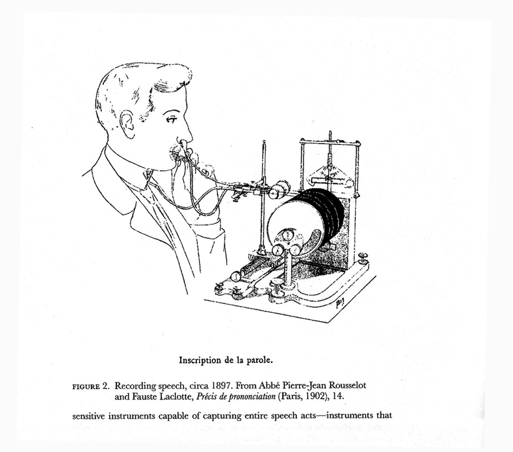
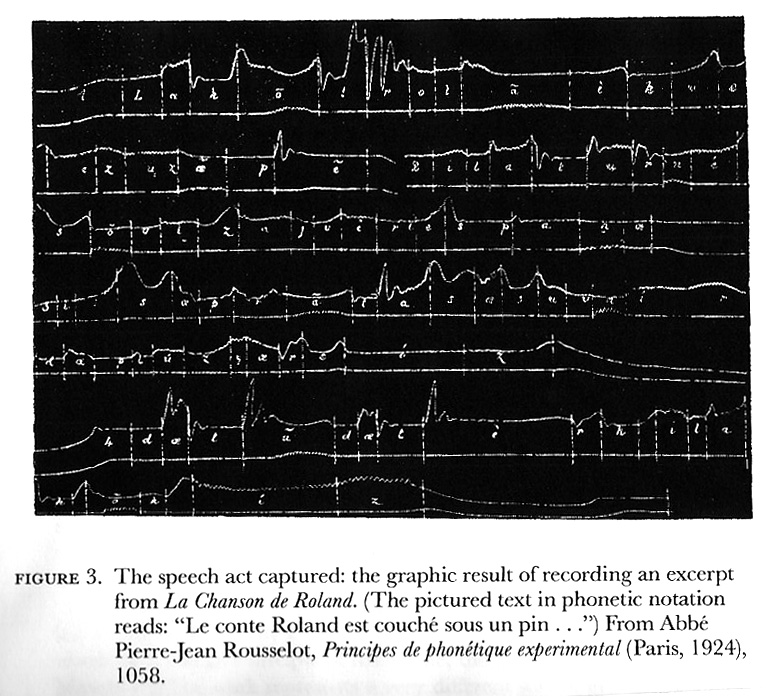

The Sound of Pound: A Listener’s Guide
Richard Sieburth
PEPC Digitial Edition
©2007 Richard Sieburth
published April 2007 in conjunction with
PennSound's Ezra Pound Page
The Work of Voice in the Age of Mechanical Reproduction
One of the earliest accounts we have of Pound reading a poem aloud is provided by F.S. Flint, fellow London member (with T. E. Hulme) of the poet’s club that used to meet at the Tour Eiffel restaurant just north of Soho in 1909. The poem was “Sestina Altaforte,” Pound’s first piece to be published in Ford Madox Hueffer’s prestigious English Review, quite a feat for a young U.S. poet just recently arrived in London. Flint remembers that when Pound first read this poem at one of their monthly gatherings, he roared it out so loudly and so violently that “the table shook and cutlery vibrated in resonance with his voice.”[1] Thereafter, whenever the poets met the restaurant manager placed a screen around their table, lest similar disturbances annoy the other diners. Appropriately enough, this PennSound selection of Pound begins with his 1939 Harvard recording of this same poem, a loose imitation of an invocation to war by the poet whom Dante refers to as that “stirrer up of strife,” the troubadour Bertrand de Born. Accompanying himself on a set of kettledrums, Pound literally shouts the poem into the microphone, spitting it out syllable by syllable: “D-A-M-N IT A-L-L! All this our South stinks peace. . .” Although in Edwardian London Pound’s “Bloody Sestina” (as his friends called it) might have passed as a relatively entertaining Kiplingesque exercise in martial bravado, by 1939 the poem might well have sounded like hysterical war-mongering—despite its poet’s avowed pacifism (indeed, Pound saw his 1939 visit to the States as a last-ditch peace mission to avert military conflict between the U.S. and Europe). Pound, at any rate, had second thoughts about the recording, for he later wrote Prof. Frederick Packard of Harvard’s Department of Speech (who had supervised the recording session for the Harvard Vocarium Series) that he wanted the recording destroyed and that “it not be played to anyone the hell ever.”[2] According to Pound’s daughter Mary, Pound was quite superstitious about his performance of this poem: he felt that just as his initial reading of it in 1909 had unhappily presaged the Great War, so his 1939 recording of it at Harvard was somehow ineluctably linked to the outbreak of World War II. . . As a measure of his earliest literary success in London and as an object—at least in its recorded form—of pentimenti and remorse, “Sestina: Altaforte” seems an emblematic place to begin to explore the Pound Sound.
Given the immediate success of his “Sestina: Altaforte,” Pound briefly played with the idea of producing a number of other such poems designed as public performance pieces. These include his popular “Ballad of the Goodly Fere” or the unpublished “Redondillas,” a sprightly 1911 satire of the modern age written in the bouncy meter of Tennyson’s “Locksley Hall” (which Pound in his old age recorded on a tape made by Olga Rudge in 1968--included elsewhere on this site). By 1912, however, as Pound moved into his more austere, pared-back Imagist manner, he had left this kind of narrative, high middle-brow easy listening poem behind for the more elusive cadences of vers libre or the more “quantitative” measures of a lyric like “The Return”—in which it seemed, at least according to Yeats in his Introduction to the Oxford Book of Modern Verse, that Pound was “translating at sight from an unknown Greek masterpiece”:
See, they return; ah, see the tentative
Movements, and the slow feet,
The trouble in the pace and the uncertain
Wavering!
See, they return, one, and by one,
With fear, as half-awakened. . .
Though this may have looked (or sounded) like free verse to Yeats, “The Return” (as Kenner and a number of other critics have shown) in fact is rather strictly organized around the single reiterated rhythmic figure of / _ _ / _ / (best heard in phrase “Gods of the wingèd shoe”)—what the French poet Charles Vildrac was at the period calling a “constant rythmique” in his essays on the new prosody.“The Return” is mentioned at this length because it was the very first poem that Pound ever recorded. Although he obliquely alludes to this episode in The Pisan Cantos (Canto LXXVII), the full story runs as follows. In the spring of 1913, Pound crossed the Channel to prepare a series of seven articles on modern French poetry, published later that fall in the New Age as “The Approach to Paris.” While in Paris he met the poets André Spire and Robert de Souza, both of whom were ardent proponents of the new vers libre—whose central principle had already been incorporated into Pound’s initial Imagist manifesto (“As regarding rhythm: to compose in the sequence of the musical phrase, not in sequence of a metronome”). Both Spire and de Souza had been attracted to the work of the abbé Pierre-Jean Rousselot (1846-1924), the founder of experimental phonetics in France, who occasionally invited poets to his laboratories at the Collège de France to conduct experiments on the phonological analysis of poetic diction.[3] The ardent vers libristes were presumably eager to find out whether Rousselot’s modern recording devices (which produced what look like intricate seismographs of vowels, consonants, pitch, and tempo) could provide scientific proof that free verse was, in its own way, just as “regular” or “formal” (in terms of the patternings of accents or quantities) as, say, the traditional alexandrine.
Pound was apparently recruited by Spire to read “The Return” into the abbé’s “phonoscope.” He recounts his session at Rousselot’s Laboratoire de Phonétique Experimentale in a little-known 1935 piece (“Retrospect: Interlude”) included in his Polite Essays:
There was in those days [1912-1913] still a Parisian research for technique. Spire wrangled as if vers libre were a political doctrine.De Souza had what the old Abbé called une oreille très fine, but he, the Abbé, wrapped up De Souza’s poems and asked me to do likewise in returning them lest his servante should see what I was carrying. The Abbé was M. Rousselot who had made a machine for measuring the duration of verbal components. A quill or tube held in the nostril, a less shaved quill or other tube in the mouth, and your consonants signed as you spoke them. They return, One and by one, With fear, As half awakened, each letter with a double registration of quavering.[4]

One of Pound’s “Paris Letters” for the Dial in 1920 comments further on this experiment:
I admit that many people did "dismiss" l'Abbé Rousselot; it is, for example, impossible to imagine God's own Englishman with one tube pushed up his nose, reciting verse down another, and God's own Parisian, and God's own supporter of the traditional alexandrine made a good deal of fun of the phonoscope. . . [T] his little machine with its two fine horn-point recording needles, and the scrolls for registering the belles vibrations offers a very interesting field of research for professors of phonetics, and, I think, considerable support, for those simple discriminations which the better poets have made, without being able to support them by much more than "feel" and "intuition." For example, the "laws" of Greek quantitative prosody do not correspond with an English reality. No one has succeeded in writing satisfactory English quantitative verse, according to these "rules," though, on the other hand, no English poet has seriously tried to write quantitative verse without by this effort improving his cadence.Given the phonoscope one finds definitely a reason why one cannot hear the in the in a phrase like in the wind, as a "long." It isn't long. Whatever the Greeks may have done, one does not hear the beginning consonants of a word as musically part of the syllable of the last vowel in the word preceding; neither does the phonoscope so record them. All of which with many other finer distinctions can now be examined with great saving of breath and paper, whenever the questions are considered of sufficient interest, either by professors, or by neophytes in the arts of versification.[5]
Here then was scientific proof of Pound’s doctrine of melopoeia, for Rousselot’s phonoscope could actually hear (and analytically transcribe) the complexities of each individual poetic voice (down to its regional accents). Rousselot’s recording device, however, did not result in replayable cylinders or discs, but rather activated styluses whose tips scratched markings onto rolls of lampblacked paper, thus graphing the voice (split into consonants and vowels) into a species of white-on-black writing—not unlike the slopes and valleys of a polygraph test or the squiggles on a film sound-strip. To Pound at least, it seemed as if the good abbé’s phonoscope had at last managed to eliminate the gap between actual sound and its conventionalized (poetic) notation—just as Fenollosa’s Chinese characters would prove that the eloquent world of things could be accurately imaged by the world of written signs.
An extended parenthesis might be in order here to locate further synchronies with Pound’s Imagist phase of 1912-13. One of Rousselot’s most important collaborators was Ferdinand Brunot, who held the chair in History of the French Language at the Sorbonne. Inspired by the Phonogrammarchiv in Vienna (1899) and Berlin (1902), Brunot founded the Archives de la parole at the university in 1911. Funded by Emile Pathé and using early Pathé “Saphir” recording discs, Brunot in 1912-13 recorded examples of patois in the Ardennes, the Berry, and the Limousin as well as samples of the “street language” of Parisian workman—first steps toward his ambitious project of producing a “linguistic atlas” of France on the phonograph. To illustrate “la parole au timbre juste, au rythme impeccable, à l’accent pur” (i.e. high standard French), he also recorded the speeches and lectures of various French politicians, university professors, clergymen and other public figures (including Dreyfus and Barrès). Brunot’s most celebrated recordings, however, were devoted to contemporary poets. On December 24, 1913 (that is, later in the same year that Pound visited Rousselot’s laboratory), he recorded Paul Fort, André Billy, André Salmon, and Guillaume Apollinaire. The latter’s readings of his poems “Le Voyageur,” “Le Pont Mirabeau,” and “Marie” may be accessed at PennSound. 1913: modernism meets the phonograph. According to his friend, André Salmon (who described the recording session in the newspaper Gil Blas the following day), Apollinaire listened to playback of his reading “not without considerable surprise”—feeling “that emotion, that uneasiness which arises when one hears one’s double sing.” From Doppelgänger to Doppelsänger. . .Radio Operas
As far as can be ascertained, Pound’s next foray into recording occurred some nineteen years later when he collaborated with BBC producer E.A. Harding on the station’s October 1931 broadcast of his opera La Testament de François Villon (first performed live in Paris in 1926) to commemorate the French poet’s quincentennial. According to Margaret Fisher’s Ezra Pound’s Radio Operas: the BBC Experiments 1931-1933 (Cambridge: M.I.T. Press, 2002), “Together, Harding and Pound broke technical and theoretical ground in the production of opera for radio. . . The transmission [of Pound’s Le Testament]. . . was one of the first electronically enhanced operas to be broadcast in Europe. It featured the use of artificial echo throughout the performance to distinguish scenic location, and the operation of an electronic audio mixing board to combine prerecorded passages with live performance. With access to the most up-to-date recording technology, Harding arranged for a steel tape recording to be made of the penultimate rehearsal to provide immediate playback for the performers’ edification.” Listening to the broadcast on wireless set in the electrician’s kitchen in Rapallo, Pound was delighted with the clarity of the transmission: “I not only knew who was singing, but I could distinguish the words, and the senses of words.” Two hard-to-find LP recordings of Pound’s Villon exist: Robert Hughes’s 1972 version for Fantasy Records (Fantasy 12001) and a 1980 Dutch recording by Reinbert de Leeuw (Philips Stereo 9500 927).
Given the relative critical success of the Villon, Harding encouraged Pound to write another opera for the BBC. The latter responded with Cavalcanti: Sung Dramedy in Three Acts, a piece (with dialogue in English and lyrics in Italian) especially conceived for radio on which he worked between 1931 and 1933. Never produced in Pound’s lifetime, its score and libretto have recently been published by Robert Hughes and Margaret Fisher in their Cavalcanti: A Perspective on the Music of Ezra Pound (Emeryville, CA: Second Evening Art, 2003). The same publisher has also brought out Hughes’s and Fisher’s edition of the Complete Violin Works of Ezra Pound (2004) as well as Fisher’s The Recovery of Ezra Pound’s Third Opera, Collis O Heliconii, Settings of Poems by Catullus and Sappho (2005). A generous and extremely well-produced selection from all the above music (and more) is contained on Ego Scriptor Cantilenae: The Music of Ezra Pound (producer: Charles Amirkhanian; music director: Robert Hughes), available on CD from Other Minds (OM1005-2CD).
1939: The Harvard Vocarium Recordings
Pound’s first extensive recording of his own poetry occurred during his visit to the U.S. in the spring of 1939—he had not returned “home” since 1911. While in Washington, he attempted (and failed) to get a personal interview with President Roosevelt (presumably to explain his economic theories), attended a session of Congress and visited the Library of Congress--where he watched a Japanese film of a Noh drama performance (which so impressed him that later during WWII he would suggest that the U.S. hand over Guam to the Japanese in exchange for “300 sound films of Noh plays”). In New York, he met with old friends William Carlos Williams, Ford Maddox Ford, and Louis Zukofsky. The latter, upon hearing Pound praise Father Coughlin’s shrilly pro-Nazi, anti-Semitic radio broadcasts, merely commented: “Whatever you don’t know, Ezra, you ought to know voices” (Carpenter, 561). Pound’s chance to add his own voice to the American thirties came in mid May when he visited Harvard with his publisher, James Laughlin (an alumnus), hosted by the poet Theodore Spencer of the English department. He gave a public reading of his poems to a packed Sever Hall; one student present remembered that “he read sitting down, held his breath for an incredible time before drawing another for the next few lines of poetry, and yet the voice was too soft to be heard, unless, as he did unexpectedly, he yelled” (Carpenter, 563).
On May 17th, Pound recorded a selection of his poetry on 78 RPM acetate/metal-backed transcription discs for the Woodberry Poetry Room—then still located in Widener Library (it was moved to Lamont Library in 1949, housed in a high modernist space designed by the Finnish architect Alvor Aalta). The Woodberry Poetry Room had been founded in 1931 “for the purpose of keeping alive the poet’s voice” through a series of public readings and recordings. The Harvard Vocarium was in turn founded the following year by Prof. F.C. Packard, Professor of Public Speaking (and eventually Boylston Professor of Rhetoric). Like Brunot at the Sorbonne, Packard was interested in recording local dialect and traditional ballads, as well as contemporary poetry. T.S. Eliot was one of the first poets to record for the Harvard Vocarium in 1933 (“The Hollow Men” and “Gerontion”) and over the years the Woodberry went on to amass the largest archive of recordings of poets in the U.S. [A full list of the its holdings may be consulted on the web; free streaming audio of such poets as Robert Lowell, Wallace Stevens and Elisabeth Bishop is available.] Pound’s complete 1939 readings, which are included here by special permission of Don Share, the current curator of the Woodberry Poetry Room, are among the rarest and most valuable in its collection.
Pound had always been interested in percussion: in a 1924 concert in Montparnasse, he had accompanied George Antheil on bass drum in a performance of the latter’s “Sonata for Drum and Piano”; he also apparently provided the percussion for the 1926 premiere of his opera Le Testament at the Salle Pleyel in Paris; and his 1934 contribution to Nancy Cunard’s Negro Anthology was largely devoted to the German anthropologist Leo Frobenius’s accounts of African drum-languages (which find their way into the Pisan Cantos). For his 1939 1939 Harvard Vocarium recordings, Pound therefore asked to be supplied with a set of kettledrums to accompany his reading: they can clearly be heard on the recording of “Sestina: Altaforte” and “The Seafarer” but thereafter, according to witnesses, having become too engrossed in the reading of his text, Pound merely waved the drum sticks around in the air, with only the occasional thump on one drum or another (Norman, 360). The drums work most effectively in “The Seafarer”—first published in 1911 and Pound’s most deliberately “archaic” poem, composed in the heavily stressed and alliterative rhythms of the Anglo-Saxon. It was into this most ancient of English poetic forms that Pound in 1917 translated Book 11 of the Odyssey (which he in turn felt was the “oldest” or most primal part of Homer’s epic)—a text that would eventually become Canto 1 (cf. on this same website the recording of this first Canto made in 1958). Canto 1 proposes that we listen to Homer’s archaic Greek as if chanted (or channeled) by the exilic voice of a seventh-century Anglo-Saxon bard. Something of a similar intuition had led young Harvard professor Milman Parry and his assistant Albert Lord (inspired, it would seem, by Rousselot disciple Marcel Jousse and the new director of the Sorbonne’s Archives de la parole, the Hellenist Hubert Pernot who had undertaken recording expeditions to Crete and Northern Greece) to travel to Yugoslavia in 1933-35 to record the rhapsodes of Bosnia reciting their traditional Serbo-Croatian epics: Lord’s study, The Singer of Tales, based on analysis of the performance practices of these Bosnian skalds, argues for an Oral Formulaic Homer already implicit in Pound’s Canto 1.[6]
Pound’s other readings on these 1939 Harvard Vocarium recordings are somewhat more conventional (that is, sans drums). From his 1919 “Homage to Sextus Propertius” he chose not its political sections (i.e. its satire of the Roman/British Empire) but rather the more melancholy part VI in which Propertius antethumously imagines his own burial (“There will be three books at my obsequies/Which I take, my no unworthy gift, to Persephone”). Pound also selected what had by 1939 already become his most canonical poem in England and America, largely through its endorsement in the thirties by such proto-New Critics as F.R. Leavis and R.P. Blackmur—namely, Hugh Selwyn Mauberley. His powerful reading of sections IV (“These fought, in any case”) and V (“There died a myriad”)—which evoke the senseless slaughter of WWI—are among the most impassioned anti-war statements of all times, the dialectical reversal, as it were, of his early “Bloody Sestina.” Pound rounded out this selection from his volume of collected poems, Personae (1926), with “Cantico del sole”—which he reads in a comically affected tone of sarcastic world-weariness that, half-way through, turns into a kind of parody of Gregorian chant: the collective guffaws of those attending the recording session can be briefly heard at the end.
The remainder of this 1939 reading is devoted to Pound’s Cantos: A Draft of XVI Cantos had been published in Paris in 1925; the first thirty were brought out in the U.S. in 1933, with eleven more following in 1934 and a Fifth Decad appearing in 1937. The Cantos that Pound chose to record at this particular juncture in his career provide a rare insight into what he considered to be the major tonal and thematic highlights of his ever-evolving work-in-progress. In chronological sequence (but not necessarily in the order of their recording), Pound began his selection with Canto XVII (whose first words (“so that”) connect it back to last words (“so that”) of Canto I. Following the purgatorial geography of the previous Canto (“And before hell mouth; dry plain/and two mountains”), this is the first sustained glimpse of Paradise we get in the poem. More specifically, it evokes what Pound calls a paradiso terrestre: though its Venetian cityscape is suffused with neo-Platonic light (“the light now, not of the sun”), the Canto celebrates a very “terrestial” and sensual locus amoenus whose erotic energies are rooted in the ancient Eleusianian Mysteries and the rites of spring—materialized by Dionysus, Artemis, Athena or represented by Botticelli’s Birth of Venus from the sea. Pound’s reading allows us to hear one of his most characteristic rhythmic signatures: light dactyls scurrying around agglutinative spondees: “cliff green-gray in the far,/ In the near, the gate-cliffs of amber,/ And the wave/ green clear, and blue clear,/ And the cave salt-white, and glare-purple.”
Only a fragment of a reading of Canto XXX survives (Prof. Packard seems to have cut off the recording after the poet stumbled about ten lines in). Pound’s decision to recite this text may have been an indirect nod to its initial place of publication, for this Canto was first printed in 1930 in Hound and Horn, a little magazine published in Cambridge and edited by Harvard undergraduate and Pound disciple Lincoln Kirstein—later founder, with George Ballanchine, of the New York City Ballet. Canto XXX provocatively challenges Chaucer’s celebrated “Compleynte unto Pite” (in which the poet says “My purpose was, to Pite to compleyne/Upon the crueltee and tirannye/Of Love). Instead of providing succor against Cruelty (as in Chaucer), Pound’s allegorical Pity more resembles the figure of the bleeding-heart liberal, unwilling to act decisively in rooting out evil, unwilling to close in on the kill as the speaker of this “compleynt,” the huntress Artemis, recommends: “Nothing is now clean slayne/But rotteth away.” As these recordings make clear, the Compleynt Agaynst Pity of Canto XXX is almost identical in rhythm and diction to Pound’s prophetic indictment of Usury in his vigorous declamation of Canto XLV--“Pity slayeth my nymphs,/ Pity spareth so many an evil thing./ Pity befouleth April, “Pity is the root and spring” becomes “Usura rusteth the chisel/It rusteth the craft and the craftsman/ . . ./ Usura slayeth the child in the womb/. It stayeth the young man’s courting.” Reviewing the latest installment of Pound’s Cantos in Poetry the previous year (March 1938), Delmore Schwartz said of Canto XLV, the Usura Canto, “there is nothing like it in English,” while adding in a footnote, “It is interesting to observe in passing that in this particular Canto the attack on usury as a poetic statement can be separated from its connection with a particular economic theory by the mere device of substituting another three-syllable word with the same accents, for example, ‘capital.’” In 1938-39, then, it was still possible for left-wing American poets like Schwartz (or Zukofsky) to hear Marx behind Pound. WWII—and in particular Pound’s vocal support for the Axis—would henceforth make this reading infinitely problematic.
By far the longest recording (almost 20 minutes) Pound made during this marathon session at Harvard on May 17, 1939 is Canto LVI, a still unpublished portion of the Chinese Cantos section of the poem (LII-LXI). Basing himself on an eighteenth-century French work, Histoire Générale de la Chine by the Jesuit priest Père de Moyriac de Mailla (who in turn drew from a neo-Confucian Chinese historian), Pound in these Cantos traces the history of China from its legendary beginnings in the third millennium B.C. through the eighteenth century (at which point the following Cantos switch from Chinese dynastic history to the American dynasty of the Adams family). In these Chinese Cantos, ideograms for the first time begin to make their visual presence systematically felt throughout Pound’s text—this purely graphic dimension of the page could of course not be conveyed in his reading of Canto LVI. What we do hear, however, is his idiosyncratic pronunciation (via de Mailla’s French romanizations--e.g. Tchin Ouang, Ouen, Tscheou, Tçin, etc.) of Chinese proper names. Whereas Chinese had been a virtually silent, primarily visual system of signs for Pound when he first edited Fenollosa’s Chinese Written Character as a Medium for Poetry, by the mid-thirties he had, by own admission, realized that he had been “in crass ignorance of the Chinese art of verbal sonority” (although this reading indicates that he had still not mastered its system of tones).[7] This unusual recording of Canto LVI, then, is perhaps best listened to not as a summary of thirteenth- and fourteenth-century Chinese history as the Sung dynasty gives way to the Mongol Yüan reign founded by Kublai Khan, but rather as a kind of radical Lautgedicht or “sound-poem” whose Chinese syllables, transliterated into the “french vowels” (Cantos, p. 310) of De Mailla, serve to produce a strange kind of post-symboliste scat-singing. Especially revealing of this is Pound’s reading of the following passage (is it in Chinese or zaum?):
And in this time was Yeliu Tschutsai
Meng Kong still held against Mongols.
Han, Lang, Ouen, Kong,
Mie, Kien, Tschong, King
Fou, Pong, Chun King
Gone
Vendome, Beaugency, Notre Dame de Clery
(Cantos, 303)[8]What is the sudden intrusion of French place-names doing here? They are drawn from an old French children’s song--“Mes amis, que reste-il/A ce Dauphin si gentil/ Orléans, Beaugency/ Notre Dame de Cléry/ Vendôme, Vendôme”—verses which André Spire, Pound’s old friend from the abbé Rousselot days, had discussed in a July 1914 Mercure de France article entitled “Le vers français d’après la phonétique expérimentale,” arguing (together with Bremond) that they constituted one of the most beautiful examples of poésie pure in the French language.[9] Pound defined his Cantos as “a poem including history.” But as his reading of Canto LVI shows, even in its most historically referential sequences (the margins of this Canto read “a.d. 1225/65,” “a.d. 1278,” “a.d. 1295,” etc. to ground its narrative of the rise and fall of Chinese dynasties in concrete chronological data), Pound’s epic is always verging on lyric, that is, on the sheer music of (non-referential, de-semanticized) poésie pure that actually undoes the very “history” it seeks to “include.”
Hearing the playbacks of his recordings, Pound was apparently quite surprised by the sound of his own voice—no doubt his first (Lacanian?) encounter with it in the mirror of a phonograph. According to biographer Charles Norman (who interviewed some of those present at the 1939 Harvard recordings in the late fifties), he commented on how “Irish brogue [was] coming out as his reading style” (Norman, 366). It has been suggested this “brogue” (or what Ford Madox Ford referred to his “Northumbrian” reading style) can be ascribed to Pound’s stint as W.B. Yeats’s personal secretary at Stone Cottage during the winters of 1913-1915 (at any rate in the Pisan Cantos (Canto LXXXIII ) he provides an hilarious imitation of Yeats reading his poem “The Peacock” in 1914), but whatever the case, the rolled or slightly burred (Scots?) r’s and faintly Celtic Twilight vowels would become a prominent feature of Pound’s reading style. In an interview with the B.B.C’s D.G. Bridson (published in 1961), Pound reflected on the relation of his reading style to Yeats’s:
And Yeats’s reading. . . well, in the first place he had Florence Farr who really could read . . . and then Yeats, his means of getting, or seeing his rhythm, was pulling out the vowels: “Made a great peacock in the pri-i-de of his eye”—that kind of thing,. I don’t know where he got to later. . . I think my reading now shows more interest in the meaning of what I’ve got on the page. I know when we were down in Syracuse, out in the Greek theatre there, and Yeats wanted me to read something—I s’pose he wanted me to read something of his or recite something—I found that the only thing one could do in the open like that—the only thing I remember that you could speak clear enough to get across was Sappho’s poem Poikilothron—with whatever pronunciation or mispronunciation I use of it. But I have no idea how he read after 1920. . .[10]
Also particularly noticeable in these 1939 readings (especially in his recitations of his Cantos, less so with the quick-paced quatrains of Hugh Selwyn Mauberley) is Pound’s tendency to emphasize his line-endings by a marked dip in his voice. The advantage here is that the listener can actually hear, clearly demarcated, each of Pound’s end-stoppings (or mid-line caesurae); the disadvantage is that this kind of circumflex intonation of line-after-line (the voice rising toward the middle of the line then falling off again at its end) can become somewhat monotonous in its “epic” or “bardic” style of medieval chant—whose archaic sing-song, melismatic mode of delivery often seems at odds with the “modernity” (or the “factuality”) of Pound’s subject matter.
1942: He Do the Enemy in Different Voices (Canto XLVI)
No account of Pound’s voice in the Age of Mechanical Reproduction can afford to ignore the some 120 speeches he recorded for broadcast on Radio Rome between early 1941 and mid July 1942—the texts of which have been published in Leonard W. Doob, ed., “Ezra Pound Speaking”: Radio Speeches of World War II (Westport, Conn.: Greenwood Press, 1978). These broadcasts led to Pound’s indictment for treason by a Federal Grand Jury in late July, 1943 and then to his internment at the U.S. Army’s prison camp in Pisa in mid-1945 and subsequent institutionalization for insanity at St. Elizabeths, the federal mental hospital in Washington D.C., until 1958—thirteen years of confinement in all, from which he never really recovered.
At the root of this legal and medical disaster lay the medium of radio (this “devil box,” as Pound prophetically called it). As early as 1924, a mere two years after the BBC had started regular programming, Pound was (in an unpublished letter to his father Homer) already comparing the montage technique of his Cantos to the medley of voices produced by turning a radio dial; in a 1940 letter he again notes of radio that “I anticipated the damn thing in first third of Cantos.” (L, 343). A similar fascination with radio informs his estimate of Lenin’s speeches in the Autumn 1928 issue of his expatriate magazine Exile: “. . . the Russian revolution owes its success to Marconi. You may verify this by reference to John Reed’s 10 Days that Shook the World. The Bolshevik coup d’état could not have been effected without wireless; the other means of communication were sabotaged.” Lenin, he continued, “is more interesting than any surviving stylist. He probably never wrote a single brilliant sentence. . . but he invented . . . a new medium, something between speech and action (language as cathode ray) which is worthy of any writer’s study.” Radio, this “new medium” of performative utterance, which opens up an entirely modern mode of revolutionary praxis situated “between speech and action” by demonstrating (to quote Austin) “how to do things with words,” is of course the technology that prompted Pound’s fidelity to the revolutionary Logos of Lo Stato Fascista. In Jefferson and/or Mussolini (1935), he registers the apostolic moment of illumination he underwent when listening to His Master’s Voice outlining the new fascist economic reforms in a radio broadcast from Milan in 1934—a variation on the Augustinian moment of conversion (“take it and hear”).[11]
Radio makes its first explicit appearance in Pound’s epic in a section of Canto XXXVIII, first published in 1933, which briefly evokes the reception at the Vatican of Guglielmo Marconi, pioneer of wireless telegraphy, putative Italian inventor of radio and recipient of the 1909 Nobel Prize in physics for his work on electromagnetic waves. Marconi’s 1933 audience with Pope Pius XI (which rhymes with Pound’s own personal audience with Il Duce that very same year) is staged as an allegorical encounter between those immaterial radiances of form-giving energy shared both by modern science and medieval Christianity--radio (whose etymology Pound understood in terms of Dante’s or Cavalcanti’s radiare or the Curie’s radium) here meeting religion. This, at any rate, was how Pound saw (or heard) things in anno XII of the era fascista. By the time Pound had gotten to Canto LXXII (first published in January, 1945, in Italian, toward the end of World War II), the radio broadcasts from the dead that Pound’s epic had now been channeling for some twenty-five years were becoming increasingly garbled. Writing in the persona of Dante (are we in Paradise or Hell?), the narrator of this Canto encounters Filippo Tommaso Marinetti who declares: “I sang war, and you wanted peace./ Both of us blind, me to the inner things/ you the things of today.” Twirling his prophetic radio dial, Dante-Pound then hears another voice on the airwaves—that of his old friend, the archivist Manlio Torquato Dazzi, translator of Mussato’s thirteenth-century Latin drama Eccerinus (whose central character is the bloody tyrant Ezzelino da Romano). As Dazzi begins citing his translation, this necromantic radio transmission (meant to raise EZzelino from the dead) is suddenly interrupted by a burst of static:
But [he] did not finish the verse
Because all the air trembled and the shadows trembled as with
a collapse
As thunder shaking the rain,
blazing phrases without sense shot thru the rain,
A grating noise inside the submarine when the beam strikes it,
I heard the spirit as if in torture.
(Cantos, 434)This Marinetti Canto ends ambiguously—a hellish Babel of radio voices counterpoised with the troubadour harmonies of paradisal birdsong:
Confusion of voices as from several transmitters, broken phrases,
And many birds singing in counterpoint/In the summer
morning
(Cantos, 436)Uncannily, these lines of January 1945 point directly ahead to the acoustic landscape of the Pisan Cantos composed that same summer: “a confusion of voices” and “broken phrases” emanating from the MASH-like loudspeakers of the U.S. Army Disciplinary Training Center and from the conversations of Pound’s fellow (African American) inmates (or “shades”), fugally interwoven with the “counterpoint” of the birds singing on the barbed wire of the prison camp (or on the staves of the poet’s own memory).
Pound had landed in the stockade at Pisa for a single reason: in the eyes of the U.S. government he was guilty of acts of treason for having delivered over a hundred “speeches” for the Italian Broadcasting System (a/k/a Radio Rome) after the U.S. went to war with the Axis in December, 1941—thus (as the Federal Grand Jury indictment of 1943 read) “knowingly, intentionally, willfully, unlawfully, feloniously, traitorously and treasonably did [he] adhere to the enemies of the United States, to wit, the Kingdom of Italy.” This is of course not the place to go into the full legal debate about this indictment or the poet’s subsequent trial in 1945-46 (Pound, at any rate, would continue to insist that treason had never been his “intent” and that he was merely exercising his constitutionally guaranteed right to free speech). It is nonetheless worth underscoring what kinds of “acts” Pound was engaged in on Radio Rome: not spontaneous improvisations, but rather carefully scripted (and relatively well-paid) performances. Pound first started writing for radio toward the end of 1940, his scripts being read in English by regular speakers employed by the Italian Ministry of Popular Culture. In January, 1941 he was given permission to record his own speeches, which were broadcast, on an average, twice a week until the fall of Mussolini’s government in July 1943. Pound typed out his speeches in advance—often inserting slash marks instead of punctuation to define what Charles Olson might have called the “breath units” of his “projective prose” (this typographical prosody has unfortunately been eliminated in Doob’s transcription of the manuscripts of the radio speeches; Olga Rudge’s pamphlet of 1946, If This Be Treason, however, maintains it for the most). After composing his scripts, Pound would apparently practice them aloud in his Rapallo home in order to perfect his delivery and would then travel down to Rome where he recorded them on discs at the studios of the Minculpop (Ministry of Popular Culture) on the via Veneto, often in batches of twenty, receiving 350 lira [about $18 U.S.] per recording.
As his biographer Humphrey Carpenter notes, Pound soon began to regard himself as something of an expert on radio technique, offering the Rome Radio staff tips on how to jazz up their American Hour (although, given the overall incoherence of Pound’s speeches, certain Italian officials remained convinced he might be an American spy broadcasting in secret code). At any rate, Pound, ever the “professional” vocalist and musician, sent in technical reports on the quality of his own radio transmissions, observing for example in July 1941, “Excellent delivery last night. Voice absolutely clear and every word ‘visible,’ except for a few Orful KRRumpzzz! of static or atmospheric or whatever that BLITZED out a few phrases—afraid ‘scum at the top’ [a typical Ezraic reference to (Jewish) bankers and arms manufacturers] was lost in the thunder.” He carefully assessed the rhetorical ploys needed to grab the attention of his audience: “Nothing solemn or formal will hold the American auditor. If I don’t sound a bit cracked and disjointed, they will twirl the button and listen to the next comic song.” To his new pen-pal William Joyce (better known as “Lord Haw-Haw,” later executed by the British for his broadcasts from Germany), Pound wrote about his radio broadcasts: “New technique for Uncle Ez. . . I think I have got my voice right at last” (Carpenter, 588, 592-93).
Though Pound thought he had gotten his voice “right” in these radio speeches, his daughter Mary realized just how wrong he was going: “his own tongue was tricking him, running away with him, leading him into excess, away from his pivot, into blind spots”[12] —which suggests that these broadcasts are perhaps best approached psychoanalytically (cf. Jeffery Mehlman on Walter Benjamin’s radio stories for children) as a kind of extended “talking cure” or twisted Song of Myself (with Ezra consistently mistaking himself for his obscene Doppelgänger, Usura). On another level, working as he was in the populist medium of radio, here at last was expatriate Pound’s chance (after the completion of the Adams Cantos) to finally seal his pact with Walt Whitman, allowing all of America’s “barbaric yawp” to ventriloquize itself through the microphone of Radio Rome. As biographer Charles Norman observes: “With his gift for mimicry, and reveling in his role of air-borne explainer and cracker-barrel philosopher, Pound gave many of his talks in stage-American sectional accents—if Yankee, more nasal than anything ever heard north of Boston, is western, more ‘folksy’ and drawling than anything ever heard west of the Mississippi, which may be saying a great deal. But in flat Pennsylvania accents he was vituperative, with a degree of abusiveness that seemed incredible in a man of his background and education.” [Norman, p. 387].
Though they could be easily heard in the U.S. on short-wave radio during the war (William Carlos Williams, for example, was furious when he learned from the FBI that Pound had mentioned him in one of his 1942 broadcasts), these speeches, now fallen silent, deserve to be more fully integrated into any study of the Pound Sound. The FCC’s recordings of the broadcasts (in the public domain) are housed in the National Archives II in College Park, Maryland and a number of them have been copied, digitized and transcribed by Benjamin Friedlander—but there is still clearly a great deal of archival work to be done in this area (at approximately ten minutes per broadcast, the FCC recordings come to some twenty hours). Prof. Friedlander has generously provided the digitized copy he made at the NARA of Pound’s February 12, 1942 broadcast, which is almost entirely given over to his reading of Canto XLVI, first published in the first issue of New Directions in Prose and Poetry in 1936. Given its colloquial passages and central economic theme (centered on the foundation of the Bank of England by Paterson in 1694—that “hath benefit of interest on all/the moneys which it, the bank, creates out of nothing”), this Canto shows just how permeable the boundary is between the Pound’s “poetry” of the thirties and his polemical “prose” (especially the performative utterances of the radio broadcasts).
Like all his radio speeches made after Pearl Harbor, the broadcast is introduced by a staff member of Radio Rome who reads a statement that Pound himself had prepared (and which he subsequently claimed should have exonerated him from any charges of treason):
The Italian radio, acting in accordance with the fascist policy of intellectual freedom and free expression of opinion by those who are qualified to hold it, following in the tradition of Italian hospitality, has offered Dr. Ezra Pound the use of the microphone twice a week. It is understood that he will not be asked to say anything whatsoever that goes against his conscience, or anything incompatible with his duties as a citizen of the United States of America.
This is followed by Pound’s own introduction to his reading of Canto 46—one of the very rare instances, given what he imagines to be his mass audience, when he actually glosses the allusions and references in his poetry. Here it is, with all the skips of the phonograph needle, in Friedlander’s transcription (which differs slightly from the script given in Doob, p. 35):
Europe calling. Ezra Pound speaking. I’m reading you another Canto for diverse reasons. Contains things or at least hints at things that you will have to know sooner or later. Berle or no Berle [one of Roosevelt’s economic advisors]. War or no war. And as I stated last time I’m feeding you the footnotes first in case there is any possible word that might not be easily comprehended. The ‘decennio” and the “decennio exposition” was the exposition. . . was the exhibition in Rome at the end of the first ten years of the fascist regime, Mussolini’s fascist regime. They set up the office, model of the office of the old Popolo d’Italia. Very like what had been the New Age office in London. Except that Orage’s office [Orage was the editor of the New Age, to which Pound frequently contributed between 1910 and 1920] contained a couple of [inaudible: i.e. “drawings by Max Beerbom”] which have never been published. Listening to the [skip] commission sat after the other war, listening to the [skip] commission sat after the other war, listening to the sins of the British financial system. [I.e. “The Macmillan Commission sat after the other war [in 1929] to look into the sins of the British financial system”]. Antonius Pius, a Roman emperor. Lex Rhodi, the law of Rhodes. Well, I says about that in the Canto, as you can see. The Latin phrase “aurum est commune sepulchrum” means “gold is the common sepulcher.” Common grave of all men. It parallels a line about Troy being the common grave. I think it is part of a line by Propertius. But it don’t matter who it’s quoted from. The greek “helandros kai helepolitis kai helarxe” is more or less twisted from a line of Aeschylus about Helen of Troy, the destroyer of m[en] [skip] destroyer of cities. Geryon or Geryone is an allegorical beast in Dante’s hell. Symbol of fraud and all dirtiness. The “si monumentum” is a Latin tag meaning “if you’re [garbled] from a monument.” Uh, and the other phrase, “hic est hyperusura,” known as “this is extra strong usury.” Super usury. All right now I’m going on with Canto six. . . forty-six.”
After Pound signs off (“That’s the end of ‘Canto Forty-Six.’ Ezra Pound speaking.”), the announcer informs listeners that the next event will be the Concert of Opera Selections—in this case the overture to Rossini’s The Rogue Dulac. Pound’s broadcasts were almost always followed by music: in an irony almost too good to be true, one of Pound’s most sulfurous ravings (“With Phantoms,” May 18 1942, which contains an explicit endorsement of Hitler’s racial theories and praise for Mein Kampf) is followed by selections from Arrigo Boito’s opera Mephistopheles.
St. Elizabeths: “Bird in Cage Does Not Sing”
Imprisoned in the U.S. Army Disciplinary Detention Center at Pisa from May 24 through Nov. 17, 1945 then flown back to Washington D.C. to stand trial for treason, Pound was found to be of “unsound mind” at a hearing on Feb. 13, 1946 and committed to St. Elizabeths, a federal mental hospital in Washington, until esteemed fit enough to understand the nature of the charges brought against him. Initially interned in Howard Hall, the “penal colony” of the hospital—where he was visited on a fairly regular basis by Charles Olson—Pound suffered from the same claustrophobia he had experienced at the DTC in Pisa and complained about the racket made by the mental patients on the ward outside his cell. When offered a radio by a doctor to help drown out the circumambient din, he angrily rejected the offer, observing that radio was “just plain noise.” (Carpenter, 727). Many of those who came to visit Pound at St. Elizabeths—even after he was moved into the more humane (and more private) confines of Chesnut Ward in 1947—commented on the oppressive acoustic environment in which Pound was forced to live. Here is old friend Ronald Duncan’s account of a 1948 visit:
An attendant or warder led me through miles of inhospitable corridors swarming with noisy inmates. The noise and echoes reminded me of a public swimming bath. . . . [His] room. . . contained an iron bed, chaos of clothes and a muddle of magazines and paper. . . We had to shout at each other even in his cell because a large television set outside in the corridor blared away. “They try to reduce us idiots to the level of insanity outside,” Ezra confessed. . . . “Have you written any poems in here?” I asked. “Birds don’t sing in cages.” We didn’t mention poetry again (Carpenter, 776).
Or another anecdote, relayed by Charles Norman:
“One New Year’s Day, [Ronald] Goodman and [Robert] Mezey found the screen and chairs where they usually sat with Pound [in an alcove] gone. In their place, was a television set, with patients watching the Rose Bowl game. They were pretty noisy about it. Pound came storming out of his room and exclaimed: “They’re trying to bring the intelligence of the people on the inside down to the level of the people on the outside” (Norman, 445).
Pound’s Section: Rock-Drill (1955) and Thrones (1959), the two “paradisal” sections of the Cantos that Pound wrote at St. Elizabeths are probably the only two major American poems ever written with (and against) a television running continually in the background.
Pound’s initial reaction to his incarceration at St. Elizabeths was to retreat from all this oppressive “noise” into the music of Confucius—or as he puts in at the beginning of Canto XCIV: “To Kung, to avoid their encirclement / To the Odes to escape abstract yatter.” Some of the early nursing notes on Pound in Chestnut Ward run as follows “Stays in his room most of his time. While in room constantly hums. At times thru the night will have a light in his room. Appears at times to be singing. Appears to be correctly oriented. At times have heard him humming some kind of tuneless chant at night” (Carpenter, 779). In addition to completing of his versions of the two Confucian Classics, The Unwobbling Pivot and The Great Digest, on which he had already begun work at Pisa and which James Laughlin published in 1947 (the poet having insisted that these texts would provide the basis for his legal defense against charges of treason), Pound was over the course of 1946 and 1947 already deep at work—humming and singing--on draft translations of the Confucian Odes. Helped by Veronica Sun, a student at Catholic University who read the Odes aloud to him, in a series of nine “Sound Notebooks” dated from May to June of 1947 he recorded the transliterations he had made of each of the 305 poems that would eventually appear as The Classic Anthology Defined by Confucius, published by Harvard University Press in 1954.[13] Using the Wade-Giles Mandarin readings given in Matthews’s Chinese-English Dictionary as well as some of Karlgren’s systems for transliterating the reconstructed archaic pronunciations of the Odes, together with random examples of European romanization (Pauthier, Lacharme, De Mailla), Pound was above trying to graph the sounds of the Book of Songs as a kind of Pythagorean music of the spheres—a music whose harmonies, subtending and guaranteeing the totality of the cosmic and political and domestic order of archaic China, would be able to counter—and silence—the carceral “yatter” [Geschwätz] to which he had now been condemned. By 1947, he was writing the Japanese poet Kitaue Kitsano about his project for a major bilingual edition of the Confucian Odes, a “scholar’s edition” of the Shih Ching (as the anthology was known in Chinese) that would include his English translation, a 588-page “singing key” (i.e. transliterations of the Chinese sounds) to guide the oral chanting of the poems plus a rubbing of the Stone-Classic text of the poems as well a reproduction of the Chinese text written in ancient seal characters—a four-dimensional musical and visual refraction of the poem. This full “scholar’s edition” never appeared, though there are indications that while at St. Elizabeths, Pound would occasionally intone passages of the Odes to visitors from the romanized “singing key” he had devised.
Among the growing stream of visitors to St. Elizabeths in the early fifties were two young recent graduates of Hunter College, Barbara Cohen (later Holdridge) and Marianne Roney (later Mantell). Having been completely bowled over by a reading that Dylan Thomas had given at the 92nd St. Y in New York City, the two young women asked whether the Welsh bard would agree to participate in a recording session of his work. He obliged with a reading of a handful of his poems and of “A Child’s Christmas in Wales”—which in 1952 would become the first release of their newly founded company Caedmon Records. Caedmon, given its subsequent collection of recordings by such writers as e.e. cummings, Robert Frost, William Faulkner, Tennessee Williams, T.S. Eliot, and Carl Sandburg, did much to launch the whole “Spoken Word” industry (and indeed, college campus readings by writers) during the 50s and 60s. Having managed to get Dylan Thomas, the two young woman decided to have shot at il miglior fabbro. Here is how Marianne Mantell later described their initial encounter on Labour Day, 1952.
We first met Ezra Pound at St. Elizabeths Hospital, whence we had gone uninvited, after our letters remained unanswered, in the hope of persuading him to record. It was a faint hope, and on it we staked close to our last $20.00 to take the midnight bus to Washington. The institution’s chief psychiatrist warned us that Pound might rave; but he let us in, and hid us in a corner of the ward. Pound was told we were there: he might ignore us or not, as he chose. It was a fearsome exposition for a gentle denouement. We came to Pound, as most people come to Pound’s poetry, with uncertainty and a feeling of less than total sympathy. Pound came to us as a teacher to his disciples, To him we looked exactly like two girls who had spent close to their last $20.00 on the midnight bus to Washington. He did not even ask if we were hungry but bounced to the refectory, then to his cubicle, bringing us slabs of bread mounded high with mayonnaise. We loathed mayonnaise, but did our best. Meanwhile Pound talked, of Confucius, Mussolini, the habits of squirrels, the end of his friendship with Cummings over an argument involving the language of blue-jays. If he often sounded outrageous we imagined the outrage of others when Pound first championed Frost, Joyce, and Eliot. A man may be so far left he seems right, and so far right he seems wrong. By the afternoon, he was ready to record—in Provençal, and on our promise not to release the recording while he was confined. “Bird in cage does not sing,” he said, many times. The machine was set up on the lawn, and Pound began to recite. These lyrics are onomatopoetic, and as he sang of birds, the birds perched overhead and sang too. In the background, inmates hooted.
This account, taken from the liner notes of their 1958 Caedmon recording of Pound reading, indicates in a footnote that this 1952 reading in Provençal “will be included in a subsequent volume of Pound recordings.” Unfortunately, it was never issued; and in a recent interview on National Public Radio Barbara Holdridge indicated that she feared the recording might have been lost: one only hopes it might be some day recovered from the archive—motz el son, twittering birds, hooting inmates and all.
A second attempt to record Pound at St. Elizabeths occurred toward the end of 1956. D.G. Bridson, a Social Creditor from Orage’s New English Weekly circle in the 30s and producer of a performance of Pound’s translation of Sophocles Women of Trachis for BBC’s Third Programme in April 1954, traveled to St. Elizabeths with recording equipment in order to capture what he thought might be Pound’s swan song, convinced as he was that the poet’s health was failing and that he would probably die in captivity. Dr. Overholser, the superintendent of St. Elizabeths, made one of the doctor’s common rooms available for the recording. Pound insisted that the choice of poems be left entirely up to him and that the broadcast (should it in fact ever take place) be utterly uncensored. Bridson later described the recording session in Agenda magazine:
Pound. . . chose to give his reading stretched out in an adjustable armchair where he could rest the back of his neck on a cushion. This meant that the book had to be held above the level of his eyes, and perched myself on the arm of the chair to hold the microphone at the proper angle for him—this despite his initial urge to seize it himself and use it like an old-fashioned upright telephone. He seemed to have forgotten his Roman microphone training. . . to my amusement, the reading started with some eight of the Alfred Venison poems—the jaunty, satirical squibs which I remembered Pound having contributed to the New English Weekly, for which we had both written in Orage’s day. In his persona of the rabbit’s-meat dealer of Great Titchfield Street in the days of the Depression, he launched out in an Americanized form of Cockney. . . The performance could only be described as bravura—as could his reading of “L’Homme Moyen Sensuel” [his 1915 Byronic satire] with which he followed it up. Some half dozen of the later Cantos—including a splendidly virulent rendition of the “Usura” Canto—concluded the afternoon’s work (Carpenter, 824).
Pound afterwards explained this eccentric choice of poems to David Rattray [who wrote a piece entitled “Weekend with Ezra Pound” for the Nov. 16, 1957 issue of The Nation]: “I conceived the whole thing more or less as a ribbing for Eliot. . . I just wanted to give the old boy a jolt, some time when he’s settling down for a nice cosy evening, if he turns on the Third Programme. I chose the ones he likes the least” (ibid.).
In any event, Pound’ eccentric and deliberately provocative 1956 performance for Bridson would have to wait until after his release from St. Elizabeths to be heard on the BBC’s Third Programme, where it became part of a far more staid survey of “Ezra Pound: Readings and Recollections” produced by Bridson (who had in the mean time traveled to Pound’s post-St. Elizabeths residence in Brunnenburg, Italy to gather further recordings). It was eventually broadcast in July 1959 and divided into three separate programs—1) the ‘Early Years’ (Hugh Selwyn Mauberley, Homage to Sextus Propertius, “Moeurs contemporaines,” Cantico del sole); 2) The “Cantos” (Cantos I, XIII, XLV, XLIX, CI); and 3) “The Later Years” (Selections from The Classic Anthology as Defined by Confucius,” the Egyptian “Conversation in Courtship” and Joel Chandler Harris’s “De Tar-Baby Story,” which Pound enjoyed reading to his grandchildren at Brunnenburg). Some day, perhaps these recordings (of which certainly the Joel Chandler Harris would be the most amusing) will also surface from the depths of the BBC Third Programme Archives.
Over the course of the 50s, Barbara Holdridge and Hillary Mantell, the young founders of Caedmon, encouraged by Archuibald MacLeish, persevered in their attempts to record Pound at St. Elizabeths:
We kept going down to Washington on a sort of annual pilgrimage, always with tape recorder in hand and with gradually less hunger on our faces. By the summer of 1956, we could afford a wheel of Provolone. We presented him with it and were swallowed up at once in the concept of the Cantos. On the following day, he brought the cheese out and swung it back at us, saying we had thought to buy him with it. We left the cheese, and never went back to see Pound. Of such whim, luckily, history is not always made. Upon his release from St. Elizabeths [April 19, 1958], his friend and publisher, James Laughlin, finally persuaded him to make this definitive recording of his poetry, before sailing from these shores for his beloved Rapallo [on June 30].
The Caedmon recording of Pound, recorded in Washington D.C. on June 12, 13. and 26, 1958, was issued as two LP records—the first (Caedmon TC 1122), dated 1960 and including on its Side A: 1. Hugh Selwyn Mauberley, 2. Cantico del sole, 3. Moeurs contemporaines, and on Side B. 1.Canto I, 2. Canto IV, 3. Canto XXVI, and 4. Canto LXXIV. Two years later in 1962, Caedmon issued its vol. 2 of Ezra Pound Reading His Poetry (TC1155) —Side One: Canto XLV, Canto LI, Canto LXXVI (second half), “The Gypsy,” “Exile’s Letter,” and Side Two: Canto XCIX.
These two 1960-62 Caedmon LP’s of Pound reading (later made available as two tape cassettes) are rightly considered the most “canonical” recordings of his poetry. Finally “sprung” from “bug house” (and, to his mind, finally vindicated), Pound’s readings of his poetry have a kind of confidence and playful buoyancy that bespeak the 72-year-old poet’s rediscovery of liberty after thirteen years of incarceration—song-bird at last released from its cage. Some of the material reprises the Harvard 1939 recordings. Pound for example takes evident pleasure in once again satirically reminding his benighted countrymen (in the poem “Cantico del sole) that “The thought of what American would be like/If the Classics had a wide circulation/Troubles my sleep.” And as in 1939, he vents his prophetic wrath against Leihkapital in the Usura Cantos (Canto XLV and Canto LI). His reading of Hugh Selwyn Mauberley, now twenty years later, not only further underscores the prosodic intricacies of the poem (there are moments when his phrasing is as quirky as Bob Dylan’s), but also, by its omission of the final section of Part I (“Envoi (1919)”) and the final section of Part II (“Medallion”) provides further fuel to critical controversy as to the overall structure of the poem (or the relation of its “E.P.” persona to Pound’s authorial voice).
Also evident in these 1958 recordings is the re-Americanization of Pound’s expat English pronunciation over the course of his 13 years of confinement at St. Elizabeths. The American inflections come through loud and clear in “Soiree,” the third of his comic “Moeurs contemporaines” series, as well as in the “Mr. Nixon” section of Mauberley—though the bravura performance of echt American speech is reserved for the beginning of his reading of Canto LXXXIV, the last of the Pisan Cantos. The other Canto Pound chose from the Pisan sequence—a selection from Canto LXXVI—provides an provocative instance of Pound using the recording medium to override the censorship to which his text was subjected in its published form. All the New Directions editions of this Canto contain the following lines:
In this rare moment of contrition—Pound is typically at his most “confessional” when speaking in languages other than his mother tongue--the exact meaning of the letters “L.” and “P.” (here described as being the “honest” or “honorable” ones, “gli onesti”) had long been open to debate. But in his 1958 recording of the poem, unrepentant about his past sympathies for beleaguered fascists, Pound openly identifies the Vichy figures on trial for treason in the summer of 1945 as [Pierre] Laval and [Henri Philippe] Pétain—the poet’s voice here explicitly naming the names that ten years earlier had been reduced to cryptic abbreviations on the page. The other Cantos Pound chose to include in this 1958 Caedmon recording are among the most well-known of the work: Canto I (Odysseus's “descent” in the underworld to consult with Tiresias), Canto IV (a palimpsest of Roman and Provençal eros and its attendant ravages), Canto XXXVI (Pound’s “traduction” of Cavalcanti’s great canzone, “Donna mi pregha,”), as well as the aforementioned selections from the Pisans Cantos (which, however, interestingly enough, do not include the celebrated and much-anthologized “Pull down thy vanity” passage from Canto LXXXI). By far the longest (and the most difficult) text Pound reads for these 1958 Caedmon recordings is Canto XCIX—which at over 23 minutes occupies the entire side of an LP. Pound was no doubt eager to offer his public a sample of the current portion of the Cantos he was working on—Thrones de los Cantares XCVI-CIX would be published (to general incomprehension) in 1959—but his patient philological scrutiny of the rites and rituals prescribed by the neo-Confucianist Sacred Edict is clearly directed at “advanced students” of the poem.Le Paradis n’est pas artificiel
States of mind are inexplicable to us.
dakruôn dakruôn dakruôn [Greek characters, meaning “weeping”]
L. P. gli onesti
J’ai eu pitié des autres
Probablement pas assez, and at moments that suited my own convenience
Le paradis n’est pas artificiel
L’enfer non plus
(Cantos, 480)Canto XCIX is perhaps most famous (in Italy at least) because Pier Paolo Pasolini chose to quote a recording of it (in Italian) in the final “Hell” section of his 1975 film: Salò, or the 120 Days of Sodom. Pasolini had earlier participated in an Italian documentary, “An Hour with Ezra Pound,” filmed by R.A.I. Televisione Italiana in 1968 in Venice. A translation by David Anderson of Pasolini’s (and Vanni Ronsivalle’s) “interview” with Pound may be found in the Fall 1981 number of Paideuma, and stills from this interview (showing Pound with the “idiot cards” he had prepared as written responses to Pasolini’s questions) are reproduced in Vittorugo Contino’s Ezra Pound in Italy (NY: Rizzoli, 1978). In his film Salò, Pasolini continues to explore his extremely ambivalent relation to Pound—whose delusional belief in Mussolini’s Salò Republic as a last-ditch effort to transform Fascism into a kind of Platonic-Confucian Utopia is recorded in the Pisan Cantos. The Salò of Pasolini’s film, by contrast, is a graphic study in the sustained sadism generated by what its director calls “the anarchy of absolute power”—and because it represents an extreme example of an Artaud-like “cinema of cruelty,” the film was banned in numerous countries upon its initial release. Toward the very end of the film, as one of the sadistic Masters of the castle of Salò is voyeuristically observing through opera glasses the scenes of unimaginable torture and cruelty in the courtyard below his windows (sodomy, rack and screws, scalping, gouging out of eyes, cutting off of tongues), the radio that has been playing in the background suddenly announces “Poetry Corner: Ezra Pound Canto 99” and as the Master sits in his salon (whose walls are decorated with the finest examples of Italian Futurist art) gazing out at the unspeakable acts taking place below, the following Pound lines are heard in Italian translation:
Rail; scold and ructions; manesco [Ital: “rough,” “brutal”]
And the whole family suffers.
The whole tribe is from one man’s body,
What other way can you think of it?
The surname, and the 9 arts.
The father’s word is compassion;
The son’s, filiality.
The brother’s word: mutuality;
The younger’s word: deference.
Small birds sing in chorus,
Harmony is in the proportion of branches
As clarity
(Cantos, 728)Like so much in Pasolini’s Salò, this act of quotation cuts several different ways. Are these eternal verities of neo-Confucianism, here articulated by the compressed Chinese of the classic Sacred Edict, meant to provide a curative glimpse of that familial, statal, and natural order and harmony so lacking from the sadistic anarchy that is playing out in front of our voyeuristic eyes? Or is Pound’s vision of the “totalitarian” (an adjective he primarily understands in its Confucian sense of the “total process”) instead here being implicated in the utter horror that Salò represents for an extreme leftist like Pasolini—just as the Futurist furnishings of the interior in these scenes bespeak the complicity of a certain Italian vanguardism (read: Marinetti) with fascism in its most deranged form?
Tempus loquendi, tempus tacendi
On June 30, 1958, four days after having completed his recordings for Caedmon, Pound sailed for Italy, declaring to reporters upon his arrival in Naples that “All America is an insane asylum.” Settling at the home of his daughter Mary and her husband, the Egyptologist Boris de Rachewiltz, in a castle above Merano, Pound’s initial euphoria over his release from St. Elizabeths was followed by exhaustion and depression. The three following years saw his health and spirits decline—although he continued at times to write, notably those texts later published in 1969 as Drafts and Fragments of Cantos CX-CXVII and “Conversations in Courtship,” based on Boris de Rachewiltz’s Italian rendition of an ancient Egyptian manuscript. His mental and physical conditions failing, he was briefly hospitalized in the Martinsbrunn Clinic near Merano in the fall of 1960 and again in 1961, when it was discovered he was suffering from a serious prostate condition. In the early spring of 1962, he moved back into the vicinity of his former Sant’Ambrogio home above Rapallo, residence of his longtime companion Olga Rudge. For the next ten years, under her care, he would divide his time between Sant’Ambrogio and her house on the Calle Querini in Venice. Whether out of sheer despondency, remorse, or terminal fatigue, Pound fell into a protracted silence. During this final decade of his life (1962-1972), in the privacy of their home, Olga Rudge occasionally tape-recorded him, partially (it would seem) to create a kind of feedback loop that might jumpstart his voice back into speech again, and partially to simply archive him reading his own texts (and those of others, such as Beckett, Flann O’Brian, T.S. Eliot, Yeats etc.)--which she would subsequently play back to him for his pleasure.
Pound Spricht Deutsch: the Bayrischer Rundfunk Recordings (1959)
These recordings were made on a TK35 Grundig recorder by Eva Hesse and Mike O’Donnell at Brunnenburg Castle in December 1959 for a Bayrischer Rundfunk radio broadcast entitled “Personae, Neue Gedichte von Ezra Pound.” The choice of poems was Pound’s own and the German versions he reads are those included in Eva Hesse’s recent edition of Personae (Zurich: Arche Verlag, 1959). Tracks 1-4 are taken from Pound’s 1916 poem “Impressions of François-Marie Arouet (de Voltaire). This poem is made up of three sections, all loosely adapted from Voltaire’s poetry—“Phyllidula and the Spoils of Gouvernet,” “To Madame du Châtelet,” and “To Madame Lullin”—and Pound reads all three in English and then the third one (with a slight Austrian accent) in Eva Hesse’s German translation. Tracks 4 and 5 feature Pound’s reading of Hesse’s translations of the first section of the poem “Phanopoeia” (“Rose, White, Yellow, Silver”) and of the fifth section of Part I of Hugh Selwyn Mauberley (“There died a myriad”).
Track 7 contains some of the raw footage, as it were, of this Brunnenburg recording session—with Pound reading the same texts as above in English and German. Eva Hesse described this session in an e-mail to me (5/9/07): “In December 1959 at Brunnenbrug EP was already in a state of unhappiness which erupted into a crisis in January, after we had left. . . . But he did take a lively interest in the recordings and when Mike [O’Donnell] said that his way of reading reminded him of Yeats, he was visibly shaken. He grabbed the papers and vanished into his room. The next morning he came up with a greatly changed way of reading, which was much more satisfactory to my mind. I had the impression that he had been practicing this all night. But he made a great comic show of not being able to pronounce “Zahnfäule” [Hesse’s German translation of “For an old bitch gone in the teeth” in Mauberley I,V] and I felt that this was in partial retribution for our cheekiness the day before.” Indeed, in the recordings collected in this Track 7 one can distinguish between Pound’s grander, more Yeatsian style of delivery and a slightly more casual, more “prosey” mode of poetic elocution—the poems read n the latter style (Tracks 1-6) were chosen by Hesse for her radio program. Toward the end of Track 7, Pound reads Hesse’s translation of the first section of Mauberley (“For three years, out of key with his time”) in Ezraic German (soft v’s, rolling r’s). Then there is the following bit of dialogue:
EH: “Can you analyze it, Mike?”
MO: “Listening to Mr. Yeats too long . . .”
EP: “But I always made fun of him. . .”
MO: “Now it’s having its revenge”Another snippet of dialogue features Eva Hesse impishly asking Pound to read some selections from the comic “Alfred Lord Venison” (sic) poems that he had previously recorded for the BBC. Pound corrects this to “Alfred Venison,” and reminds her that he read these “in the bughouse”—i.e. at St. Elizabeths [see previous section].
The Spoleto Recordings (1967)
Olga Rudge’s “management” of Pound’s silence also extended to her acting as his impressario and agent for his rare ventures into the public spotlight. The most celebrated of these involved his participation in Gian-Carlo Menotti’s 1965 Spoleto Festival of Two Worlds. Also invited to the festival that year were the poets Stephen Spender, Charles Olson, Lawrence Ferlinghetti, Allen Tate, and Barbara Guest (in addition to such Italian luminaries as Salvatore Quasimodo), but the clear “star” was the nearly 80-year-old and by now mythically “silent” Ezra Pound. Menotti arranged for a special ballet version of Pound’s Villon opera, Le Testament, to be performed—which its composer opined was an utter “waste of time.” Pound, in any event, refused to recite any of his own poetry on stage and instead sat in Menotti’s private box, microphone at his side, and read from Marianne Moore’s translations of La Fontaine and Robert Lowell’s translation of Canto CV of the Dante’s Inferno [a recording of Pound’s reading of “Bruno Latini” may be found among Lowell’s papers at the Harry Ransome Library at the University of Texas]. Something of a media circus ensued. As his biographer explains: “There were political overtones to the occasion. Uniformed police were in the auditorium to protect him from a Communist demonstration. Outside in the piazza he was persuaded to read from the Cantos in front of a big crowd and the television. People asked for autographs. He said to Desmond O’Grady [an Irish poet very close to both him and Olga in Venice): ‘It’s all wrong, they don’t want me here, this is your generation.’ But he was back in Spoleto next summer, reading from the stage this time” (Carpenter, 889).
Out of these summer visits to the Spoleto festival, where Pound mingled (but mostly communed in silence) with such old acquaintances and admirers as Marshall McLuhan and Isamu Noguchi, there evolved the project to record him as part of a series of LP’s entitled The World’s Great Poets Reading at the Festival of Two Worlds. The series included records by Italian poets (Ungaretti, Luzi, Gatto, Risi, Sereni), Spanish-language poets (Alberti, Godoy, Paz, Aridjis), American poets (Berryman, Corso, Ginsberg), British poets (Kavanaugh, Spender, Tomlinson). But given the aura of silence that now surrounded him, Pound was given pride of place and granted a full LP of his own, recorded at Spoleto in the summer 1967. The producer of the record was Vincent R. Totora, an Italian-American who had studied at the University of Padua after the second world war and traveled to East Berlin as part of a communist youth group. During the fifties he worked as a folklorist and made documentary films in the U.S. (on the Shakers, the Hasidim, and the Etruscans). His work in public relations led to an affiliation with Spoleto Music Festival in the late 1960s where he participated in the production of several recordings of festival performances as well as the Ezra Pound Reading His Cantos LP. Hugh Kenner, the doyen of Pound scholars, was invited to write the liner notes for the record, dated 1968. This jacket commentary on “Ezra Pound at Spoleto” is reproduced here for the first time by permission of the Hugh Kenner Estate. Familiar with Pound’s voice ever since he first visited him at St. Elizabeths (with Marshall McLuhan) in June, 1948, Kenner’s ear for the subtle and understated inflections of Pound’s late, affectless reading style is unerring:
A voice from another age, from a very old man, born in Idaho at a time (1885) when the lanes of London were scavenged by municipal goats. Marius the Epicurean was published that year, Browning and Ruskin were active. Wagner was but two years dead, Jesse James but three. And at 82, in Spoleto, 1967 borne by earthspin with the rest of us through a cosmos adrift with artificial satellites, the survivor retraces his written memories. The Muses are daughters of memory, civilization is memory, the Cantos a lifetime of ordered memory: by intention, the active ledgers of civilized mankind, overseen by the Muses.
Canto III begins by remembering a young man’s Venice (“I sat on the Dogana’s step”), and a reference to “those girls” reminds us also of Browning remembering how he made part of Sordello “on an empty palace-step/At Venice.” “Gods float in the azure air. . .” remembers how the Italian Renaissance remembered Greece; “My Cid rode up from Burgos” remembers the 12th-century Spanish poet remembering Ruy Diaz; and the end of the Canto remembers a wall painted by Mantegna, now ruined. Sordello and the Poema del Cid remain.
For the Cantos repeatedly remember craftsmen, because time that takes poets, heroes, walls does not ruin craft. Having early perceived this, Pound deliberately set out to learn, as Renaissance poets did, how poetry is written: what Homer knew about, what Propertius knew about it that Homer did not, what can be gathered only from the troubadours, or only from Dante. His great effect on his contemporaries—on Eliot, for instance, or Hemingway, or Dr. Williams—derives largely from his mastery, and his insistence that there is nothing mysterious about mastery. Language is mysterious, and the poet’s initial gift utterly mysterious, but rhythms, shifts of diction, semantic precisions, nearly all recalling past mysteries, will come at his need if he has paid such matters sufficient attention through a sufficiently long apprenticeship.
The sureness of Canto III, written in Pound’s early thirties, is a sign that the apprenticeship is behind him. Canto XVI, written in Paris a few years later, works with comparable sureness on a larger scale. It carries us out of a hell of the mind, witnessed by Blake and Dante, into a visionary paradise (“then light air, under saplings”) where sleep is troubled by voices recalling wars: Victor Plarr on the War of 1870, Fernand Leger in highly colloquial French on the Great War, Lincoln Steffens on the Russian Revolution.
Canto XLIX on the other hand (Italy, 1935) derives a vision of tranquility from a set of anonymous Chinese poems about lakes, calligraphed in a book the poet’s father acquired in the early years of the American taste for Oriental artifacts, and joins to these a Japanese transcription (“Kei Men Ran Kei. . .”) of a poem attributed to the legendary Emperor Shun of Chine (2255 B.C.), and a folk song (“Sun up: work”) said to date from the time of Shun’s predecessor the Emperor Yao. The theme of the Canto is quiet order, its hidden subject, Tradition.
Tradition and Craftsmanship were among the themes of Pound’s preoccupation during his imprisonment in Pisa (1945), when he had reason to think that the Cantos might soon be terminated by an executioner. The first half of the Canto LXXXI recalls scattered men of insight in sundry corners of an earlier world, before the War; and insight, as the second half shows, is not invention but vision, recreation. “It is not man made courage, or made order, or made grace;” it is man’s privilege, rather, to glimpse these qualities in a cosmic order that embraces ants and goddesses, and affirm them in words and music, and reaffirm them generation after generation. Its music and eloquence have made this one of the most anthologized of the Cantos; yet the virtuosity is not on display, is rather obligated by the example of the great predecessors from whom the Canto quotes or to whom it alludes.
Canto XCII (1955), written in St. Elizabeths Hospital in Washington, reaffirms the relevance of vision to the practical order, and laments millennia of “desensitization.” Canto CVI (1960) offers tantalizing visions into the heart of some supernatural order, associated with the sun, with eyes, and with mysterious pervasive light, and culminates in a vision of the natural order as a vast temple, the sky “leaden with elm boughs.”
As this preponderance of visionary material suggests, the long work was approaching its culmination. But the poet’s health failed soon after his return to Italy, and only fragments of the final sequence have appeared. Near the end of the Spoleto readings [in From Canto CXV] we hear lines that sound like a valedictory:
A blown husk that is finished
But the light sings eternal . . .--himself the blown husk, the eternal light the poem set out so long ago to recover and celebrate, the order man has not made.
Though the dynamism of earlier decades has departed from his voice, though his eye at Spoleto moves from line to line of the text with little prevision of a passage’s cumulative force, Pound’s reading elucidates certain things we might not have found out for ourselves: notably that the meaning is nearly independent of elocutionary aid. He has advised sundry translators of his work to proceed word by word, simply setting down equivalents and trusting the sense to declare itself. No poet cares more about local accuracy of meaning, and he reads line by line as he hopes to be understood, line by line. When the meaning is unclear it is because the auditor either does not catch an allusion or is troubled by an ellipsis; by rapid movement from instance to instance, perception to perception, without specification or transition.
In these readings the showier aspects of Pound’s craftsmanship—the rhythmic drive for instance of the “Pull down thy vanity” chorus [in Canto LXXXI]—receive no emphasis: a reader with a text must recreate these qualities for himself. But his central discipline, which was to state things exactly and arrange these statements in an elucidative order, survives the impediments of failing strength and faltering attention.
It was central to heritage that he recalled poetry to the declaration of significant meaning: meaning of greater import than the state of the poet’s spirits on a certain morning. He did not look for subjects, they forced themselves upon him, during his long career of involvement in the agonies of a civilization racked by wars and depressions. About such public agony, and about the heritage it seemed essential to preserve from its ravages, he had things to say, the art of saying which was his lifelong study. Hence the uncluttered felicity that age and fatigue cannot hide from whoever listens to his voice today.
The Confucian Odes (1970)
Three years after these Spoleto readings, a companion LP was recorded (probably in Venice) for Arthur Luce Klein’s Spoken Arts label. Produced by Olga Rudge with Vincent R. Totora again acting as the Production Coordinator, the record was entitled Ezra Pound Reading his Translations of the Confucian Odes, and, according to its jacket, “was prepared under the auspices of the Asian Literature Program of the Asia Society.” The LP features twenty-four selections from Pound’s The Classic Anthology Defined by Confucius, first published by Harvard University Press in 1954 and then as paperback (under the title The Confucian Odes) by New Directions in 1959. Judging from the number of readings of these Odes contained on the private tapes that Olga Rudge made in Venice around this period (1968-70), Pound apparently carefully practiced his performance of these poems under her expert supervision in preparation for this recording—which remains as a result one of the finest examples of his late singing style. For these poems are above all meant as songs to be sung, their tones attuned to the ancient practices of rites (li)—hence Pound’s frequent recourse in these translations to English or Scots ballad meters (Burns) or to the American folksong tradition (as in his inspired cracker-box rendition of “Yaller bird, let my corn alone”) or even jazz skat-singing (as in “Hep-Cat Chung”). Here, again reproduced for the first time (and with permission), are Hugh Kenner’s liner notes for this 1970 release—whose down-home rural rhythms and offbeat rustic diction can still hold their own against the albums of the same period by Bob Dylan or The Band:
Here’s the kind of shape civilization takes now: America’s archpoet, born in Hailey Idaho, October 30, 1885 and raised in Pennsylvania, sits in his 85th year at a microphone in Italy, reading versions he made in Washington 20 years ago of anonymous Chinese poems at least 2500 years old. The notes of a Swedish scholar, Bernard Karlgren, guided him through their intricacies. And as to his first interest in such poetry, it was aroused decades before that by the papers of a half-Spanish American, Ernest Fenollosa, who had become Japan’s Imperial Commissioner for Fine Arts. Local literatures seem obsolete.
And yet the Chinese poems are intensely local. They come from a time when men’s deepest feelings were tribal, and rulers were like warrior-priests, and ritual human actions—marriages, wars, homages to the ruler—took things of the natural world as sacramentals and omens. Many of the poems seem as artless as folk-songs.
To recapture such strata of feeling in a time remote from them takes an intricate, cosmopolitan technique. Pound’s rhymes and rhythms are elusive; his syntax evades the symmetry of the plain thing said plainly. In the first Ode we hear.
Clear as the stream her modesty;
As neath dark boughs her secrecy,
reed against reed
tall on slight
as the stream moves left and right
dark and clear,
dark and clear. . . .This circles a long way from the literal to hint, as direct transcription no longer can, at mysterious wholenesses of feeling, the reeds and the stream and the dream-lady all members of one felt universe, one cannot specify how.
Such seamlessness, the odes imply, is the human norm. Let it be ruptured by self-seeking or by idle language, and we may expect droughts and locusts:
Heaven has let down a drag-net of ill-doing,
the locusts have gnawed us with word-work,
they have hollowed our speech. . .This fuses actual locusts in the grain-field with trivial bureaucrats; for as all beneficences are intertwined, so are all calamities.
The Odes are called “Confucian” because Confucius was once thought to have selected them. Certainly he insisted that his followers know them word by word. Not to have studied them, he said, is to stand with one’s face to the wall. Ever since his time, being known to all literate men, they have helped define Chinese civilization.
Ezra Pound’s concern with defining a civilization reaches back some sixty years to the days when he was first making Provençal and Anglo-Saxon qualities available to readers of English. A civilization, he has always implied, consists of the best that we know, not kept under glass but set free to shape our sensibilities and direct our wills. About 1916 he commenced the still unfinished Cantos, a compendium of history’s paradigms of order. In the odes he saw a precedent for the Cantos, a seeming miscellany, extending from folk wisdom to rarified discriminations, which had in fact helped order a great civilization. In translating the Odes entire, he was in part vindicating his own enterprise; and in his version of the last Ode here recorded, a lifetime’s technical mastery defines intricate ceremonial, drums doing homage to a ruler’s answering might, so ancient the response it exacts is sophisticated now because no longer habitual:
. . . With thud of the deep drum,
flutes clear, doubling over all,
concord evens it all, built on
the stone’s tone under it all.
T’ang’s might is terrible
with a sound as clear and sane
as wind over grain.A literal rendering runs simply, “The hand-drums and drums din, resounding are the notes of the flutes; it is both harmonious and peaceful, following the sounds of our musical stones: oh, majestic is the descendant of T’ang, august is his music.
Pound has remembered the old association of ruler and grain god, and Confucius’ comparison of the good ruler to wind over grass, and shaking his rhythms with primitive urgency, has held the structure of the stanza’s sound as clear as that of the music it celebrates. After three thousand years the poem stirs Pound into speech; after three thousand years Pound lends a dead poet his voice.
An Angle (1972)
Pound’s final official recording was published as a small 33 rpm vinyl disk placed inside the back cover of a portfolio produced by the Erker-Presse of St. Gallen, Switzerland. A deluxe, limited edition of several of Pound’s Cantos, lithographically reproducing facsimiles of the poet’s own handwriting (signed and dated Venice, April 6, 1971) and accompanied by seven lithographs by Giuseppe Santomaso, An Angle was issued in 1972 to generate funds for the “Consultative Committee for the Unesco International Campaign for Venice”—with all profits going to the restoration of the Basilica dei Frari in Venice.
In this last and rarest of Pound’s public recordings, the focus is entirely local (and philanthropic) with the ministering presence of Olga Rudge just as evident as in the final text Pound ever published—a civic-minded translation of a poem by Ugo Fasolo (published at Olga’s behest in the [London] Sunday Times Weekly Review of April 12, 1970) protesting the pigeon epidemic that had descended on his adoptive Venice (see Library of America, p. 1201). Returning to his earliest Cantos, Pound chose to assemble an ideogram of texts all relating to the history of his Venice. From Canto XVII (which had previously read at Harvard in 1939), he selected a passage evoking Venice as a kind of otherworldly paradis artificiel worthy of the fin-de-siècle symbolists—a city, as seen in a mirror, a “forest of marble” and with “waters richer than glass.” This is in turn juxtaposed with a passage from Canto XXV, which includes decrees concerning the palace of the doges and which reproduces a letter from the 16th-century painter Titian and the council’s resolution concerning the commissioning of one of his paintings—an illustration of state patronage of the arts during the Renaissance. This is followed by three excerpts from Canto XXVI, the first alluding to the gathering of the delegates to the council convened by Pope Eugenius IV in the 15th century to explore ways to unite the Eastern and Western branches of the Church—with the delegates from the East debarking at Venice before making their way to Ferrara. The following excerpt is composed of a long letter by the 16th-century Venetian painter Vittore Carpaccio addressed to the Marquis of Mantova, complaining that he has not been paid for a painting of Jerusalem that has been unfairly taken from him—a typical case of an artist exploited. The final excerpt is taken from the very first lines of the same Canto, with Pound remembering his initial stay in Venice in 1908, age 22—piazza San Marco and gondolas: “And I came here in my young youth/ and lay there under the crocodile/ By the column, looking East on the Friday. . . The prows rose silver on silver/ taking light in the darkness.”
Miscellaneous Late Recordings
These performances are taken from what have sometimes been called “The Aspern Tapes”—some twenty hours of recordings that Olga Rude made of Pound reading (or, occasionally, conversing), most of which date from the fall of 68, when she apparently acquired a cassette tape recorder of her own to celebrate his 83rd birthday. These tapes first came to light in the spring of 1984 when in the course of a visit to Olga Rudge's home in Venice, the Pound musicologist Robert Hughes was shown, lying in a desk drawer, what he describes (in an e-mail to me) as "a mess of about two dozen 'Radio Shack"-type cheap cassettes, many of them with their tape guts extensively spilled out." Hughes laboriously respooled the tapes and the following fall, after her participation in the 1985 Pound Centennial in Hailey, Idaho, Olga Rudge flew to the Bay Area where she spent a week with him overseeing the transfer of this material onto reel-to-reel Scotch 226 tape and TDK High Bias Cassettes. Hughes tried to equalize and filter the high hiss (and "the low moan of the vaporetti") as much as possible-all in the hope that these recordings might be acquired by Stanford University's Archive of Recorded Sound. Negotiations with Stanford however broke down in 1987: for some of the extraordinarily Jamesian intrigue in Venice surrounding the Pound materials in Olga Rudge's possession, see John Berendt's recent The City of Falling Angels. Selections from these "Aspern Tapes" have been made available in digitized form the with crucial assistance of Robert Hughes and the kind permission of Olga Rudge's grandson and executor, Siegfried Walter de Rachewiltz. To remain consistent with the organization of the other recordings on this PennSound Pound page, these readings have been arranged by their original date of composition, not by their date of recording.
The first reading featured here is “Redondillas, or Something of That Sort,”—a long, satirical poem that was removed from Pound’s collection Canzoni (1911) in its proof stages. Its meter and matter parody that of Tennyson’s 1886 “Locksley Hall Sixty Years After” (with bows to Byron and Whitman). Pound’s reading of this poem is prefaced by the comment “I’d sensed enough not to print this in 1911 and am relieved to see it reprinted now”—which definitely places this tape-recording after the spring of 1968, when New Directions brought out a limited edition of “Redondillas.” Pound can be heard fumbling about as he tries to get his reading underway, exclaiming in despair “it’s such a muddle,” before finally being pointed in the right direction by the authoritative voice of Olga Rudge who impatiently advises him “to take a deep breath” and to “start at the beginning.” Pound then manages to make it all the way through the text in one go, virtually sight-reading a poem he had not laid eyes on in 57 years.
Given the firmness and gusto of the poet’s voice (plus the fact that they seem to come from a different tape recorder), the two readings that follow--the first from Canto LXXX and second from Canto LXXXVIII--may well date from as early as 1962, when Olga Rudge initially took Pound into her care. Canto LXXX (from the Pisan Cantos sequence) provides a particularly virtuoso example of the poet’s ear for dialects and languages. In this show-piece of sorts, we hear him move in the space of a few pages from Irish brogue (“Your gunmen thread on moi dreams”) to Sienese dialect (“non è una hontrada è un homplesso”), to the sounds of prisoners being put through their drills at the Pisa DTC (“hot hole hep cat”),” to a snatch of the “Battle Hymn of the Republic” playing over the camp’s loudspeaker system (“mi-hine eyes hev”), to Homeric Greek (“hou tis”) to a commentary on the Chinese ideogram for dog, to Dante’s Italian (“così discesi per l’aer maligno”) or Froissart’s French (“on doit le temps ainsi prendre qu’il vient”).
The following selection, from Canto LXXXVIII (in Section: Rock-Drill), features Pound speaking in the persona of Thomas Hart Benton, author of A Thirty Years View (1854), a memoir recalling the American political scene from 1820 to 1850 and which interested Pound above all for its insights into the “bank wars” that occurred during the presidency of Andrew Jackson (1829-37). Benton, like Jackson and other such figures as Randolph, Van Buren and Macon, deeply opposed the Clay proposal to recharter the Bank of the United States in 1832. Benton in this passage recounts how Randolph of Roanoake had asked him to be a second in the duel to which Henry Clay had challenged him—but which Benton had to refuse because he was related to Clay’s wife. Pound takes particular pleasure in articulating the drawls of these southern gentlemen involved in an affair of honor which he places in the larger context of the history of the “epic” battle between state vs. private control of banking.
The next recording, which seems to date from March 1969, is a reading of the entirety of Canto XCIII (still from Rock-Drill—thus originally written at St. Elizabeths in 1954-55). The initial sound quality is quite poor; Pound seems quite lost and hesitant as he tries to feel his way through the text, but his confidence grows as he hits a magnificant patch of Provençal (“Peitz trai pena d’amor/Que Tristans l’amador/Qu’a suffri mainta dolor/Per Iseutz la bionda,”p. 644), then falters again at the thought of suicide (“The suicide is not serious from conviction/. . . . From sheer physical depression, c’est autre chose,” p. 645), then, a few pages later, his frail, ancient voice lifts and gathers pulse, carried along by the powerful litany-like cadences of a prayer (“oro”=I pray) beseeching compassion. The prosody is positively penitential:
Lux in diafana,
Creatrix,
Oro.
Ursula bendetta,
Oro
By the hours of passion,
per dilettevole ore,
guide your successor,
Ysolt, Ydone,
Have compassion,
Picarda,
compassion
By the wing’d head
By the caduceus,
compassion;
By the horns of Isis-Luna,
compassion.
The black panther lies under his rose-tree.
J’ai eu pitié des autres.
Pas assez! Pas assez!
For me nothing. But that the child
Walk in peace in her basilica,
The light there almost solid.
(Cantos, 648)This entire Canto, written in 1954, takes on added resonances in 1969—its lines now emerging from an old man’s silence and readdressed to his lover of 45 years:
Shall two know the same in their knowing?
You who dare Persephone’s threshold,
Beloved, do not fall apart in my hands.
(Cantos, 651)All ending with Dante’s purgatorial: “Tu mi fai rimembrar.” You make me remember.
The final major selection from the Cantos featured here is Canto XCVI, the first of the late Thrones (1959). Pound explained the title to Donald Hall in his Paris Review interview of 1962: “The thrones in Dante’s paradiso are for the spirits of the people who have been responsible for good government. The thrones in the Cantos are an attempt to move from egoism and to establish some definition of an order possible or at any rate conceivable on earth. . . . Thrones concerns the states of mind of people responsible for something more than their personal conduct.” It is difficult to date exactly the reading of this Canto--it seems to precede the 1968 recordings by a few years—but whether because of the quality of the sound on the tape or because of Pound’s style of performance, Canto XCVI has a kind of gorgeous hush and remoteness to its music: although written in the mid-50s and recorded ten years later, it seems to come from very far off, virtually from outer space or from deep beneath the sea. We have here entered into Pound’s arcanum. The Canto opens with the shipwrecked Odysseus, saved from drowning by Leucothoe’s veil (or kredemon) and borne “thru these diafana” into a catalogue of late Roman and Byzantine emperors (drawn from the accounts of chroniclers gathered in volume 95 of Migne’s Patrologia Latina)—which in turn leads into lengthy quotations in Greek from The Book of the Eparch of Leo the Wise (866-912), as we sail to a paradisal Byzantium of civic order grounded on humane sovereignty, low interest rates, and exactitude in language and coinage. Virtually impenetrable in its arcane references to the economic history of the late Roman and Byzantine Empires, Canto XCVI—as this late reading makes clear—is also, on the sheer level of sound, one of Pound’s most beautiful: the baffling obscurity of the text when read on the page is, if not clarified, at least lightened and deepened when listened to in his reading.
The final Cantos selection from the “Aspern Tapes” comes, appropriately enough, from the Drafts and Fragments Cantos CX-CXVII—most of which were composed between late 1958 (after Pound’s return to Italy) and late 1959, even though these poems were not officially published in book form by New Directions until ten years later, that is, in 1969. Pound had previously read a short excerpt from this final section (“from Canto CV”) on his 1967 Spoleto album, but these recordings made by Olga Rudge (on a tape that judging from internal evidence must date from February or March, 1970) seem to contain his only other surviving performance of shards from the late Drafts and Fragments. The sound quality of these tapes is quite poor—Olga occasionally bought cassette tapes of classical music and simply recorded over them, thus creating the acoustic equivalent of Pound’s own textual palimpsests. In addition, the poet’s voice is extremely frail and he is evidently having trouble just focusing his eyes on the page. In the reading of a passage from “Notes for CXI,” it’s almost as if we were listening to a duet—with Olga’s stage whispers gently (and this time, O so patiently) prompting Ezra’s delivery as he falters and loses his way. We overhear the infinite care with which—voice coach to his silence--she nudges him on into song:
Soul melts into air,
anima into aura,
Serenitas.
(Cantos, 803)The final recording reproduced here was made at the podium of the Fondazione Cini—il miglior fabbro (as Eliot called him in his dedication of The Waste Land) speaking in formal academic Italian in front of an audience of dignitaries (including his old acquaintance Eugenio Montale) gathered in Venice for the 1965 commemoration of the 700th anniversary of Dante’s birth. Pound modestly notes that he is unworthy of pronouncing himself on the Florentine on this occasion but that he would like to honor the memory of a major Dantista, recently scomparso—namely, his old friend T.S. Eliot who had died in January of that same year and for whose Westminster Abbey funeral he had flown up to England. Pound later wrote (in a short piece published in the winter 1966 issue of the Sewanee Review): “His was the true Dantescan voice—not honoured enough, and deserving more than I ever gave him. I had hoped to see him in Venice this year for the Dante commoration at the Giorgio Cini Foundation—instead: Westminster Abbey” (Carpenter, 888). After briefly characterizing Eliot’s immense debt to Dante, Pound, the lone survivor of high modernism—Hemingway and H.D. had died in 1961, Cummings in 1962, Williams in 1963, and now Eliot in 1965—recites the following lines from “The Burial of the Dead” section of The Waste Land:
Under the brown fog of a winter dawn,
A crown flowed over London Bridge, so many,
I had not thought death had undone so many.He concludes by passing on the flame to a much younger American poet, Robert Lowell, from whose poem “Brunetto Latini” (based on Canto XV of the Inferno) he proceeds to read, slowly fading into inaudibility:
I would say more to you, but must stand
Forever talking, speech must have an end. . .[14]
Margaret Fisher photo of Olga Rudge and Bob Hughes mastering of the Aspern Tapes, San Francisco, Fall 1985
.
Margaret Fisher photo of Olga Rudge and Bob Hughes, San Francisco, Fall 1985
Margaret Fisher photo of Olga Rudge, San Francisco, Fall 1985
[1] Humphrey Carpenter, Serious Character: A Life of Ezra Pound (Boston: Houghton Mifflin, 1988), p. 116. Hereafter cited as “Carpenter” in the text).
[2] Charles Norman, Ezra Pound (New ork: Minerva Press, 1969), p. 366. Hereafter cited as “Norman” in the text. Mary de Rachewiltz’s comments on this recording were communicated to me by e-mail.
[3] Pierre-Jean Rousselot, Principes de phonétique expérimentale (Paris: Didier, 1924), 2 vols. See Katherine Bergeron, “A Bugle, A Bell, A Stroke of the Tongue: Rethinking Music in Modern French Verse,” Representations 86 (Spring 2004), pp. 53-72, for more on Rousselot and the conceptualization of vers libre. Her article also very usefully includes a picture of the recording machine that Pound used when reciting “The Return” and a sample of one of Rousselot’s transcriptions [reproduced below].
[4] Polite Essays (London: Faber & Faber, 1937), pp. 129-30.
[5] “The Island of Paris: A Letter. November 1920,” Dial (Dec. 1920), p. 637.
[6] Thanks to Haun Saussy for suggesting the Jousse-Pernot-Parry connection.
[7] Pound’s comment on the “Chinese art of verbal sonority” comes from his 1935 “Terminal Note” to The Chinese Written Character as a Medium for Poetry (San Francisco: City Lights, n.d.), p. 33. As Pound’s recordings on this site show, however, he never mastered the pronunciation of Chinese (be it the system of its vowels, its consonants or its tones)—even after having studied it in depth in preparation for his translation of the Confucian Odes.
[8] Because of the change in pagination produced by the insertion of the “lost” Cantos LXXII and LXXIII of 1944, all references are to the 13th printing of The Cantos of Ezra Pound (New York: New Directions, 1995).
[9] André Spire, Plaisir poétique, plaisir musculaire (New York: Vanni, 1949), pp. 13 and 387.
[10] D.G. Bridson, “An Interview with Ezra Pound,” New Directions in Prose and Poetry 17 (1961), p. 165.
[11] See my “From Rossetti to Radio: Pound’s Opera Cavalcanti” in Hélène Adji, ed., Ezra Pound and Referentiality (Paris: PUPS, 2003), pp. 149-151.
[12] Mary de Rachewiltz, Discretions (Boston: Little Brown, 1971), p. 173.
[13] See Mary Paterson Cheadle, Ezra Pound’s Confucian Translations (Ann Arbor: University of Michigan Press, 1997) and Edith Sarra, “Whistling in the Bughouse: Notes on the Process of Pound’s Confucian Odes,” Paideuma 16, nos. 1-2 (Spring-Fall 1987), pp. 7-31.
[14]Robert Lowell, Collected Poems (New York: Farrar, straus & Giroux, 2003), p. 416. Another recording of this poem was made by or for Jack Sweeney of Harvard at Rapallo, Sept. 27, 1964 and is here reproduced courtesy of Don Share.
Immense thanks to Charles Bernstein and his assistant Mollie Braverman.